iTest User's Guide
The TestStatusDisplay (i.e., VCL Scope) tool displays a list of running procedures, allowing you to view, debug, and edit the procedures, as applicable.
 |
CAUTION: | SolutionBuilder must be closed in order to use the TestStatusDisplay tool. |
TestStatusDisplay Interface
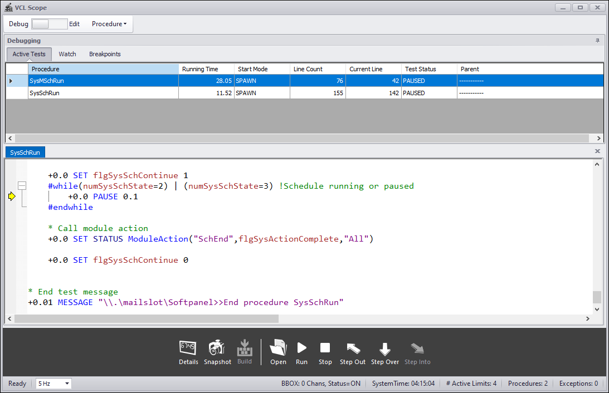
The following buttons are available at the bottom menu of the TestStatusDisplay:
Bottom Menu Buttons
| Icon | Button | Description |
| 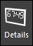 | Details | Launches the Performance Details dialog. For more information, refer to the Performance Details section. |
| Snapshot | Launches the Procedures Snapshot dialog. For more information, refer to the Procedures Snapshot section. | |
| 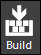 | Build | Rebuilds VCL after modifications are made to the procedure and prompts you to restart iTest. For more information, refer to the Building VCL documentation. |
| Open | Opens a procedure for debugging and/or editing. This procedure does not have to be running. | |
| Run | Runs the currently opened procedure. | |
| Stop | Stops the currently opened procedure. | |
| 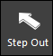 | Step Out | Exits the current procedure and returns to the calling procedure. If there is no calling procedure, the current procedure executes until it is complete. iTest ignores any breakpoints that are past the current point of execution. When stepping out of a called procedure, the calling procedure is brought to the top of all opened procedures. This button is enabled when a procedure is being debugged. Note: This only occurs upon reaching a breakpoint. |
| 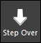 | Step Over | Advances to the next valid line of code. This button is enabled when a procedure is being debugged. |
| 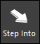 | Step Into | Steps into a called procedure. If the called procedure is already opened, click the Step Into button to bring it to the top of all opened procedures. This button is enabled when a procedure is open and being debugged, and the current line of code starts another VCL function or procedure using the EXECUTE VCL command. Note: This only occurs if a breakpoint has been toggled on this line or if using the Step Over button to step through the procedure from a previous breakpoint. |
TestStatusDisplay will show up to 50 of the active procedures. If there are more than 50 procedures running, then you can use the Procedures Snapshot dialog to view the complete list. The active procedures will display in the Debugging window under the Active Tests tab. The list of system channels being used as performance counters can be viewed via the Performance Details dialog.
Active Tests
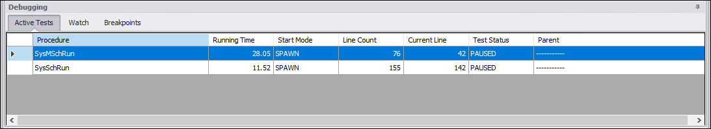
The following right-click options are available in the Active Tests tab:
Right-Click Options
| Option | Description |
| Format Time | Changes the format of the running time displayed in the TestStatusDisplay interface (seconds to HH:MM:SS:SS). |
| Abort Procedure | Allows you to stop the selected procedure. Note: A child procedure cannot be stopped directly. The parent procedure is the one that must be stopped, which will then stop any child procedures. |
| View Procedure | Displays the selected procedure on top of all opened procedures. The current line of code will have a yellow arrow next to it. |
The Procedures Snapshot dialog shows a snapshot of the entire list of running procedures and can be launched by clicking the Snapshot button. The Refresh button* allows you to refresh the list of running procedures. The Save button allows you to save the list of running procedures as a TXT file (*.txt).
Procedures Snapshot Dialog
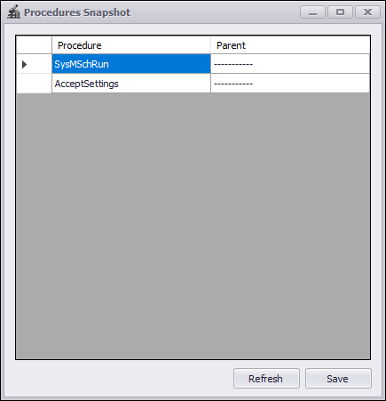
The Performance Details dialog shows a list of system channels used as performance counters and can be launched via the Details button. This dialog is primarily used to do a real-time analysis of the system.
Performance Details Dialog
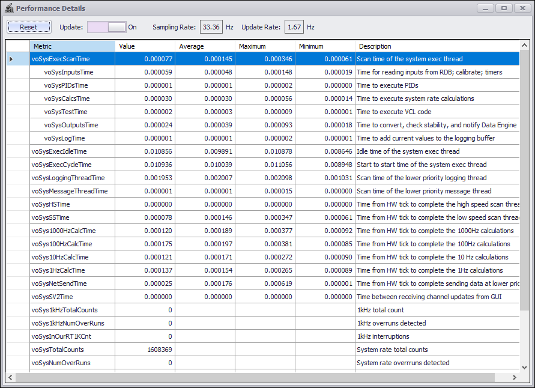
The toggle at the top of the TestStatusDisplay window allows you to switch between debugging and editing procedures.
Toggle Mode
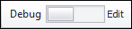
When debugging procedures, you can add/remove breakpoints, as needed, in the Procedures window. Each line with a breakpoint will be listed in the Debugging window under the Breakpoints tab.
Breakpoints
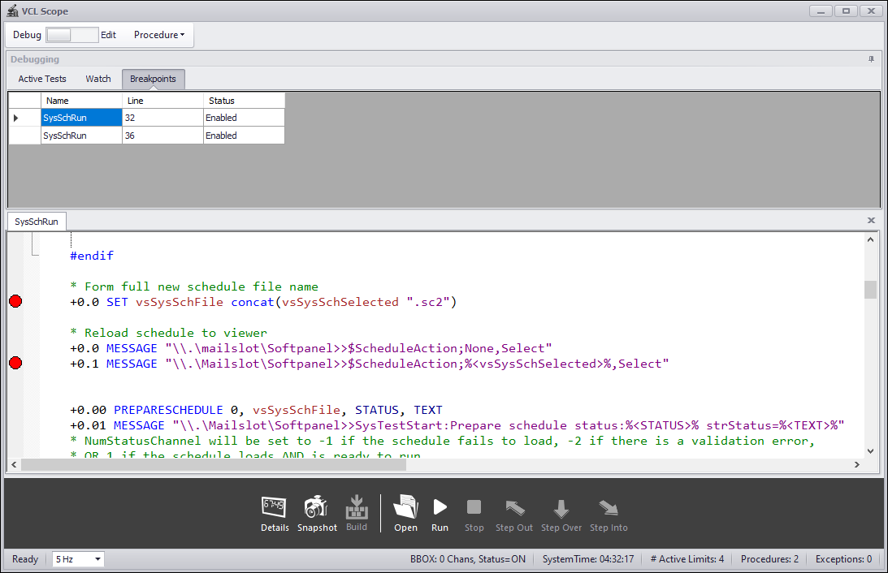
The following right-click options are available in the Breakpoints tab:
Right-Click Options
| Option | Description |
| Enable/Enable All | Enables an individual breakpoint or all breakpoints in the procedure(s). |
| Disable/Disable All | Disables an individual breakpoint or all breakpoints in the procedure(s). |
| Delete/Delete All | Deletes an individual breakpoint or all breakpoints in the procedure(s). |
In addition, you can use the Modify Value right-click option in the Watch tab to modify a channel or internal variable's value. This tab contains a list of channels used within the opened procedure(s). A local variable's value can be modified only if the procedure within which it is declared is running and the variable has already been declared. If you write a string to a numeric channel, the value of the numeric channel changes to 0. If you write a numeric value to a string channel, the value of the string channel will contain the string representation of the numeric value.
Watch Tab
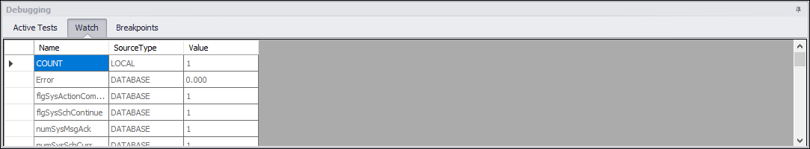
When editing procedures, you can modify the procedure and add/remove bookmarks, as needed, in the Procedures window. After modifying the procedure, click the Build button to save changes and restart iTest. You can use the Procedure drop-down list to view all currently opened procedures; selecting a procedure name in this list will display the procedure on top of all other opened procedures.
Procedures Window
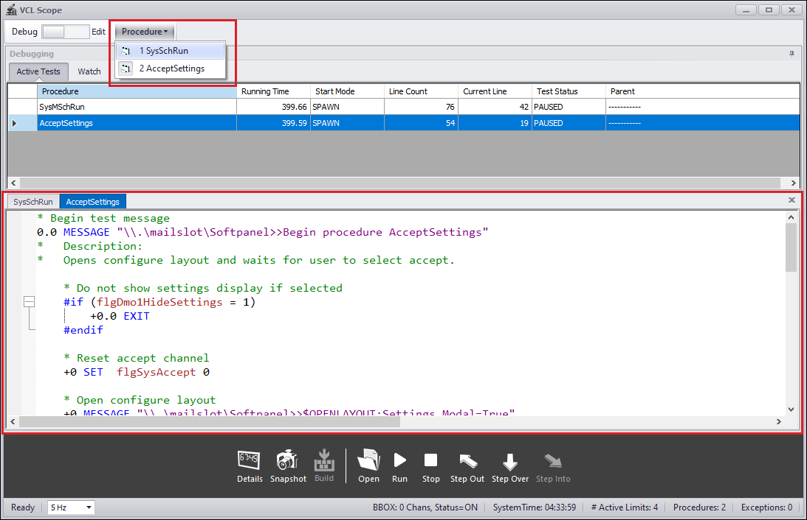
The following right-click options are available in the Procedures window:
Right-Click Options
| Option | Description |
| Cut | Removes the selected text and copies it to the clipboard. |
| Copy | Copies the selected text. |
| Paste | Pastes the copied values from the clipboard. |
| Find... | Launches the Find and Replace dialog with the Find tab opened. |
| Replace... | Launches the Find and Replace dialog with the Replace tab opened. |
| Toggle Whitespace | Turns whitespace markings on/off. |
| Make Uppercase | Makes the selected text uppercase. |
| Make Lowercase | Makes the selected text lowercase. |
| Comment | Comments out a line of text in the procedure. The text does not need to be selected or highlighted to comment it out. |
| Uncomment | Uncomments a line of text in the procedure. |
| Undo | Undoes the last action. |
| Redo | Redoes the last undone action. |
| Open Procedure | Opens the procedure based on the text that was clicked on. |
| Next Bookmark | Navigates to the next bookmark in the procedure. |
| Previous Bookmark | Navigates to the previous bookmark in the procedure. |
| Preferences... | Launches the Editor Properties dialog, which enables you to modify the appearance of the editor. You can customize the font style and size, display line numbers, and enable outlines for blocks of code. |
| Set Breakpoint | Sets a breakpoint for the line. |
| Clear All Breakpoints | Clears all breakpoints in the procedure. |
The Status bar displays at the bottom of the TestStatusDisplay and contains various types of information, such as the number of active limits and the number of running procedures.
Status Bar
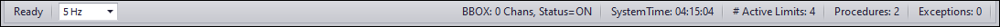
Status Bar Items
| Item | Description |
| Rate | Specifies the update rate of the TestStatusDisplay interface. Options include 1 Hz, 2 Hz, and 5 Hz. |
| BBox: # Chans, Status=ON/OFF | Reports the number of channels listed in the Blackbox.lol file. Status is the value of the CRS_CONTROL channel; 0 = OFF, 1 = ON |
| SystemTime | Time since iTest started running. |
| # Active Limits | Number of channels with active limits. |
| Procedures | The number of running procedures. Stored in the voSysNumProcs system channel. |
| Exceptions | The number of software exceptions that have occurred. Stored in the voSysNumExceptions system channel. |